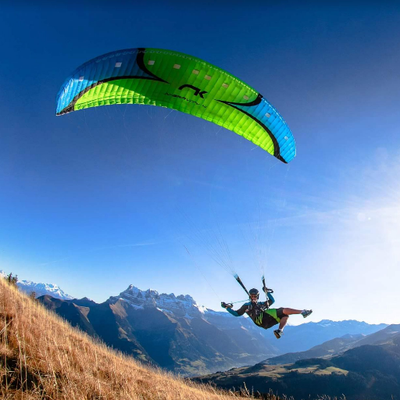
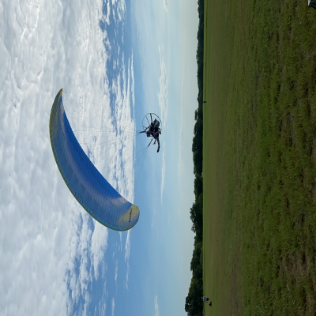

Paragliding in a particular sport that can be done around the world.
It's a sport that gives you the ability to glide through the air like a bird.
 Learn More About Paragliding HereParamotoring is a sport similar to paragliding with one small difference...
You have a motor on your back.
Believe it or not, but it is actually safer than normal paragliding,
and allows you to fly around much more control and freedom.
 Learn More About Paramotors Here